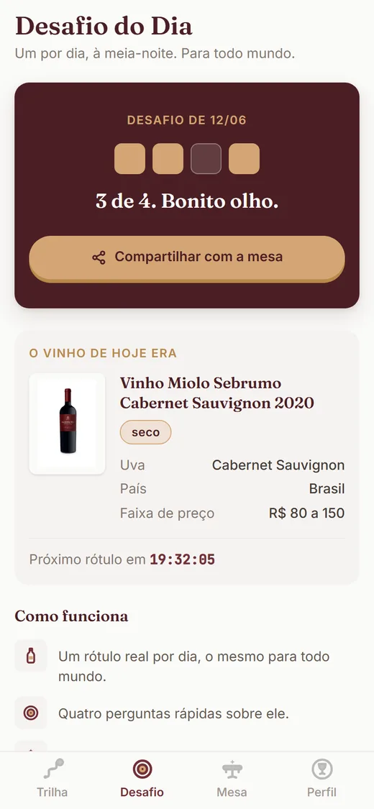
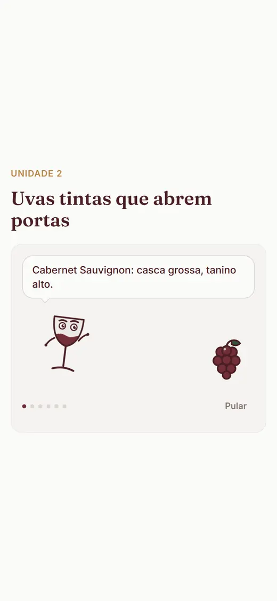

Para presente, jantar e macarrão de domingo
Presente, jantar, primeiro encontro: chegue com o vinho certo.
Treino de 2 minutos por dia para acertar o vinho de cada ocasião gastando menos de R$100. Grátis no beta.
Que tal experimentar? Grátis no beta. Abre direto no navegador do celular.

"Me indiquem um bom vinho tinto seco, preciso presentear e não entendo nada de vinhos. Obs: por até 100,00."
Pedido real feito em rede social, anonimizado, levemente editado para leitura.
Toda ocasião com vinho tem hora marcada
O aniversário do chefe é sexta. O jantar na casa dos sogros é sábado. O primeiro encontro nem data tem ainda, mas a pergunta já mora na cabeça: que vinho levar? Aí a gente corre para os comentários da internet e pede socorro, como tanta gente que pergunta por lá "qual vinho casa mais com macarrão?". Uma das dúvidas mais curtidas que encontramos, aliás.
Quem acerta o presente não decorou mil garrafas. Aprendeu meia dúzia de combinações que funcionam: o que casa com massa de molho vermelho, o que acompanha churrasco sem brigar com a carne, o que agrada quem prefere suave. E aprendeu a achar tudo isso na faixa dos R$30 a R$80 do mercado, porque ocasião especial não precisa de boleto especial.
E uma coisa o treino respeita desde a primeira lição: seco, meio seco e suave são gostos, nunca degraus. Se a pessoa presenteada prefere suave, o acerto é o suave. Cada vinho do treino mostra essa informação com destaque, porque é exatamente o que falta no rótulo de verdade.
No Treine seu Paladar, você conta seu objetivo no primeiro minuto, e a trilha se organiza para ele: receber em casa, restaurante, mercado. Os exercícios são cenários da sua vida, com preço real: "churrasco na casa do amigo, R$80 no mercado". Você desliza para responder se o vinho combina ou não combina com o prato, erra sem medo (o primeiro tropeço da lição não custa nada) e aprende a regra por trás do acerto, em uma frase de gente.
Casa com, na linguagem do treino, é quando vinho e prato se ajudam: o molho vermelho do seu macarrão pede um tinto de acidez viva. Duas lições depois, você escolhe esse tinto sozinho.
Como funciona o treino
-
Conte qual é a ocasião
Receber em casa, restaurante, mercado: você escolhe o objetivo e a trilha se monta na ordem que te serve.
-
Treine com cenários reais
Churrasco com R$80, presente até R$100, macarrão de domingo. Preço de mercado, nunca de revista.
-
Chegue com a garrafa certa
Você aprende as combinações que funcionam e a faixa de preço que vale a pena em cada uma.
Prova honesta, em números do produto
Contamos só o que existe no app hoje. Sem depoimento de encomenda, sem estrela inventada: estamos em beta, e o beta é grátis.
- 30
- lições na trilha, com fatos verificados um a um
- 12 mil+
- vinhos catalogados com preço de verdade; 10 mil e tantos no treino
- R$30-80
- a faixa de mercado em que os cenários de compra treinam você
- 2 min
- por lição. Dá tempo até sexta
O treino, do jeito que ele aparece na sua tela


O próximo convite vai chegar.
Pode ser um jantar, um aniversário, um domingo de macarrão. Treine 2 minutos por dia a partir de hoje e chegue com a garrafa certa, pelo preço certo.
Que tal experimentar?